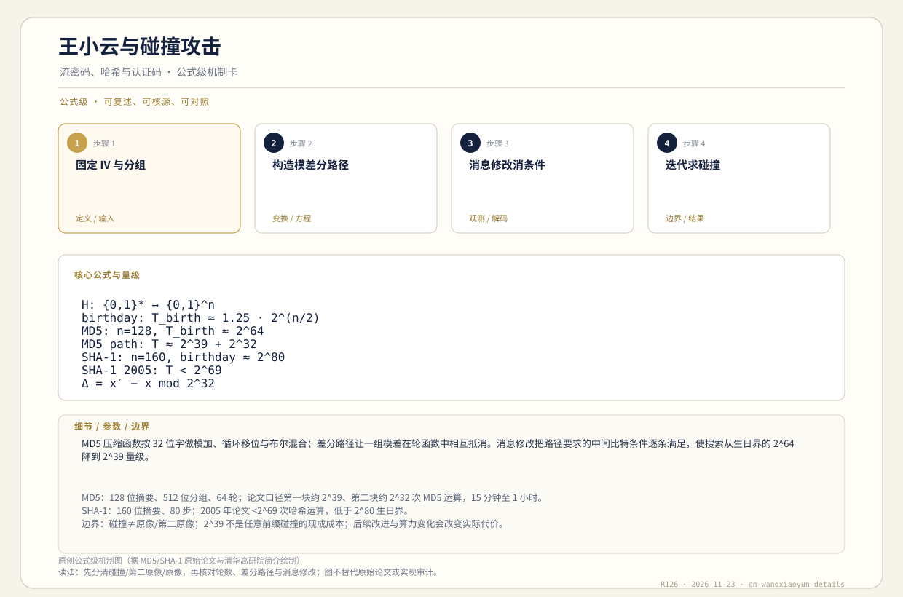

原理与机制
中国密码史：王小云与碰撞攻击（Wang Xiaoyun and Collision Attacks）。### 碰撞不是解密
哈希函数 H:{0,1}*→{0,1}^n 把任意消息压成 n 位摘要；碰撞是找到 M≠M′ 使 H(M)=H(M′)。理想随机函数的生日界是 T_birth≈1.25·2^(n/2)：MD5 的 n=128，约 2^64；SHA-1 的 n=160，约 2^80。### 模差分与消息修改
MD5 压缩函数按 32 位字做模加、循环移位和布尔混合。王小云团队不用 XOR 差，而用模减差 Δ=x′−x mod 2^32，构造高概率差分路径，再用消息修改把路径中间条件逐条满足。2005 年 MD5 攻击把第一块搜索降到约 2^39 次 MD5 运算，第二块约 2^32；SHA-1 全 80 步降到 <2^69，低于 2^80 生日界。

为什么重要
碰撞攻击打的是完整性而非保密性：数字签名先哈希后签名，若两封内容不同的文件同一摘要，签名可被移植；证书、软件发布、版本控制、去重与取证都依赖碰撞阻力。MD5/SHA-1 的碰撞阻力被实际击穿，说明“摘要看起来随机”不等于“抗碰撞”。
应用与实例
1.先分清安全目标：抗碰撞、抗第二原像、抗原像三者不等价。2.对证书、签名、软件分发等碰撞敏感场景，不使用 MD5/SHA-1；按现行标准选 SHA-256/384/512 或 SM3。3.迁移时不仅换算法，还要检查协议是否仍用旧摘要做标识、KDF 或 MAC。4.验证历史签名时，把算法、参数、证书链和时间戳一起记录。5.需要复现研究时，按论文的差分路径、消息修改和轮数逐步核对，不把 2^39 当成任意前缀碰撞的成本。### 不能怎么用
不能把碰撞攻击说成“能解密任意哈希”；不能用一次碰撞证明所有 SHA-1 用法都可伪造；不能把摘要长度当唯一安全参数；不能拿本文当作实现安全认证。
边界与攻击面
1.轮数/分组限制：差分路径依赖具体的压缩函数与轮数，换算法或改轮数就失效。2.消息自由度：需要足够的分组和消息修改空间；固定输入、短消息或强约束会提高成本。3.前缀约束：MD5 的 2^39 是特定差分路径的碰撞搜索，不是任意 chosen-prefix 碰撞的现成成本。4.验证成本：碰撞只保证摘要相等，不保证语义、签名或协议层面的伪造成功。5.迁移不彻底：只换哈希名而保留旧协议，仍可能被长度扩展或旧摘要标识攻击。SHA-1 的 <2^69 是 2005 年论文的哈希运算复杂度；后续攻击与算力进步会改变实际成本。该条目给公式与量级，不给攻击脚本，也不把历史攻击当成今日实现审计。
历史与背景
2004 年 8 月，王小云、冯登国、来学嘉、于红波在 ePrint 2004/199 公开 MD4、MD5、HAVAL-128、RIPEMD 的碰撞结果；2005 年 EUROCRYPT 的 MD5 论文与 CRYPTO 的 SHA-1 论文分别获最佳论文奖。清华大学高等研究院简介称其提出“模差分比特分析法”，破解包括 MD5、SHA-1 在内的 5 个国际通用哈希函数，并主持设计 SM3；SM3 于 2018 年 10 月成为 ISO/IEC 国际标准。
逐步示例与核验
事件时间线模型
背景 → 过程 → 结果 → 争议。背景写此前技术/制度；过程写可核参与者与时间；结果写后续标准、机器、课程或政策；争议写二手叙述与一手材料的差距。
参考出处
- Wikipedia search entry for 王小云与碰撞攻击. https://zh.wikipedia.org/w/index.php?search=%E7%8E%8B%E5%B0%8F%E4%BA%91%E4%B8%8E%E7%A2%B0%E6%92%9E%E6%94%BB%E5%87%BB
- 《密码简史：穿越远古 展望未来》（杨义先、钮心忻，电子工业出版社，2020，ISBN 9787121398711）. https://book.cppinfo.cn/Encyclopedias/home/index?id=3730464